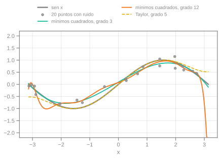
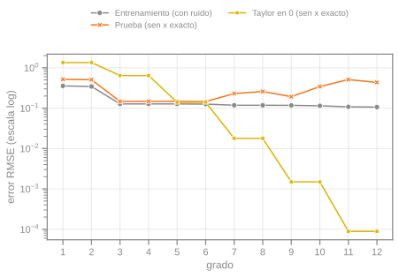

Taylor contra mínimos cuadrados
Hay dos formas de aproximar $\sin x$ con un polinomio. Taylor usa las derivadas en un solo punto y no mira ningún dato. Mínimos cuadrados mira puntos ruidosos y busca el polinomio que mejor los ajusta. Las dos dan un polinomio del mismo grado, pero se comportan de manera muy distinta. El código está en codigo/taylor-minimos-cuadrados y hay una app para jugar con los parámetros.
El experimento
Se generan 20 puntos $(x_i,\ \sin x_i + \varepsilon_i)$ con $x_i$ al azar en $[-\pi, \pi]$ y ruido gaussiano de desvío $0{,}25$. Con scikit-learn se ajustan polinomios de grado 1 a 12 (PolynomialFeatures + LinearRegression). Los errores van a un DataFrame de pandas en formato largo, que seaborn grafica directo:
df = errores(x, y, max_grado=12) # columnas: grado, conjunto, rmse
sns.lineplot(data=df, x="grado", y="rmse", hue="conjunto", style="conjunto", markers=True)Hay tres series. El error de entrenamiento se mide sobre los 20 puntos con ruido. El error de prueba se mide sobre la curva exacta $\sin x$ en 400 puntos de $[-\pi, \pi]$, que el modelo nunca vio. La tercera es el error del polinomio de Taylor en 0 del mismo grado, medido igual.

Qué muestran los errores

- Mínimos cuadrados sobreajusta. El error de entrenamiento solo baja: de $0{,}127$ en grado 3 a $0{,}106$ en grado 12. El de prueba hace lo contrario: queda en $0{,}147$ entre los grados 3 y 6 y sube hasta $0{,}433$ en el grado 12. El polinomio de grado alto se pega al ruido.
- Con pocos datos y ruido, el grado bajo gana. A los mínimos cuadrados les alcanza con grado 3, mientras que Taylor de grado 3 tiene un error de $0{,}640$. Ajustar sobre todo el intervalo rinde más que ser exacto en un punto.
- Pero Taylor termina ganando. Pasa de $0{,}018$ en grado 7 a $0{,}0015$ en grado 9 y a $0{,}00009$ en grado 11. Ningún ajuste a datos ruidosos baja de $0{,}146$, porque el ruido pone un piso.
La diferencia de fondo
Taylor es local y exacto: necesita conocer la función y sus derivadas en un punto, no tiene ruido ni sobreajuste, y su error crece como $|x|^{n+1}$ al alejarse. Mínimos cuadrados es global y estadístico: no necesita conocer la función, solo datos, pero hereda el ruido y se pasa de ajuste si el grado es alto para la cantidad de puntos. Si tenés la fórmula, usá Taylor. Si solo tenés mediciones, ajustá y controlá el grado con datos de prueba.
Lo que se ve depende de la semilla, de la cantidad de puntos y del ruido. En la app podés cambiarlos y ver cómo se mueve el grado óptimo.